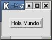

|
||
| Anterior | Home | Siguiente |
En Gtk-Perl, todos los objetos descienden de la clase Gtk::Object.
La rama que más nos interesa es la de Gtk::Widget, que contiene
todos los elementos gráficos. Dentro de ésta también
destaca la subrama llamada Gtk::Container que es de la que descienden todos
los widgets que pueden contener otros widgets (botones que pueden contener
pixmaps, ventanas que pueden contener botones, ...).
| Gtk::Object
+-Gtk::Widget | +-Gtk::Misc | | +-Gtk::Label | | | +-Gtk::AccelLabel | | | +-Gtk::TipsQuery | | +-Gtk::Arrow | | +-Gtk::Image | | +-Gtk::Pixmap | +-Gtk::Container | | +-Gtk::Bin | | | +-Gtk::Alignment | | | +-Gtk::Frame | | | | +-Gtk::AspectFrame | | | +-Gtk::Button | | | | +-Gtk::ToggleButton | | | | | +-Gtk::CheckButton | | | | | +-Gtk::RadioButton | | | | +-Gtk::OptionMenu | | | +-Gtk::Item | | | | +-Gtk::MenuItem | | | | | +-Gtk::CheckMenuItem | | | | | | +-Gtk::RadioMenuItem | | | | | +-Gtk::TearoffMenuItem | | | | +-Gtk::ListItem | | | | +-Gtk::TreeItem | | | +-Gtk::Window | | | | +-Gtk::ColorSelectionDialog | | | | +-Gtk::Dialog | | | | | +-Gtk::InputDialog | | | | +-Gtk::DrawWindow | | | | +-Gtk::FileSelection | | | | +-Gtk::FontSelectionDialog | | | | +-Gtk::Plug | | | +-Gtk::EventBox | | | +-Gtk::HandleBox | | | +-Gtk::ScrolledWindow | | | +-Gtk::Viewport | | +-Gtk::Box | | | +-Gtk::ButtonBox | | | | +-Gtk::HButtonBox | | | | +-Gtk::VButtonBox | | | +-Gtk::VBox | | | | +-Gtk::ColorSelection | | | | +-Gtk::GammaCurve | | | +-Gtk::HBox | | | +-Gtk::Combo | | | +-Gtk::Statusbar | | +-Gtk::CList | | | +-Gtk::CTree | | +-Gtk::Fixed | | +-Gtk::Notebook | | | +-Gtk::FontSelection | | +-Gtk::Paned | | | +-Gtk::HPaned | | | +-Gtk::VPaned | | +-Gtk::Layout | | +-Gtk::List | | +-Gtk::MenuShell | | | +-Gtk::MenuBar | | | +-Gtk::Menu | | +-Gtk::Packer | | +-Gtk::Socket | | +-Gtk::Table | | +-Gtk::Toolbar | | +-Gtk::Tree | +-Gtk::Calendar | +-Gtk::DrawingArea | | +-Gtk::Curve | +-Gtk::Editable | | +-Gtk::Entry | | | +-Gtk::SpinButton | | +-Gtk::Text | +-Gtk::Ruler | | +-Gtk::HRuler | | +-Gtk::VRuler | +-Gtk::Range | | +-Gtk::Scale | | | +-Gtk::HScale | | | +-Gtk::VScale | | +-Gtk::Scrollbar | | +-Gtk::HScrollbar | | +-Gtk::VScrollbar | +-Gtk::Separator | | +-Gtk::HSeparator | | +-Gtk::VSeparator | +-Gtk::Preview | +-Gtk::Progress | +-Gtk::ProgressBar +-Gtk::Data | +-Gtk::Adjustment | +-Gtk::Tooltips +-Gtk::ItemFactory |
Afortunadamente no tenemos que sabernos de memoria todas las propiedades
de cada uno de los objetos anteriores. Hay muy buenos manuales y tutoriales
en Internet donde están perfectamente documentadas.
Como viene siendo habitual empezaremos con un programa sencillo:
el hola mundo. Queremos que el script muestre una ventana principal con
un botón y que al presionar el boton muestre en la consola desde
donde arrancamos el script un mensaje de texto.
Lo primero que tendremos que hacer es incluir el módulo Gtk en nuestro script con la línea siguiente:
use Gtk;
Hay dos líneas más que es obligatorio incluir. Una al principio que inicializa el módulo Gtk y establece cosas como el mapa visual y de colores por defecto, inicializa los manejadores de evento por defecto, ...
init Gtk;
y otra al final de la parte principal del script que arranca el bucle de espera de eventos.
main Gtk;
Cuando el script llegue a la línea anterior Gtk se quedará
en espera de eventos. Se puede ver como un bucle infinito que sólo
se rompería con una llamada explicita de salir (que efectivamente
la hay en Gtk, como veremos).
El script tendría el siguiente aspecto:
| #!/usr/bin/perl -w
use Gtk; # cargamos el modulo Gtk init Gtk; # Inicializa Gtk-Perl # Definicion de variables muy utilizadas
# Creamos un widget ventana y un widget boton
# Registramos los manejadores de eventos
# Mostramos el boton
# Fijamos ciertos atributos de la ventana, anclamos
el boton a ella y la
# Entramos en el bucle Gtk de eventos
# Aqui nunca llegamos
### Manejador del evento borrar
### Manejador del evento click
|
El resultado es una ventana como la siguiente:

¿Qué cosas remarcables vemos en este script?.
1. La notación de objetos de Perl es un poco diferente a lo que estamos acostumbrados hasta ahora. Una clase suele tener un nombre como <cadena1>::<cadena2>. Para crear un objeto se usa la función new que devuelve un valor escalar. Este valor escalar es una referencia al objeto y viene a ser como su identificador único en el sistema.
Crear un objeto:Los objetos tienen atributos y métodos. Los métodos son subrutinas comunes a todos los objetos de una clase dada. Se invocan mediante el operador -> que sigue a la referencia del objeto.$objeto = new TipoObjeto(parámetros);Todos los objetos de Gtk se llaman Gtk::<nombre>
Usar un método de ese objeto:2. Para escribir un manejador de eventos, se procede de la siguiente forma$objeto->metodo(parámetros);
a) Registrarlo mediante la llamada $objeto->signal_connect(SIGNAL,manejador);Algunas de las señales más comunes son: delete_event , click , button_press_event , button_release_event , motion_notify_event , destroy_event , key_press_event , key_release_event , enter_notify_event , leave_notify_event , ...b) Escribir el manejador: sub manejador { ... }
3. Todos los widgets que se creen y se vayan a mostrar tienen que ejecutar su metodo show(): $widget->show();
4. Algunos widgets son contenedores: Pueden tener dentro otros widgets (pensad en ventanas que contienen botones, botones que contienen imagenes, ...). Para añadir un widget a otro se suele usar el función add() o algún otro parecido.
5. Para salir de la aplicación se llama a la función Gtk->exit(). Este es la llamada que rompe el bucle de espera de eventos.
|
||
| Anterior | Home | Siguiente |